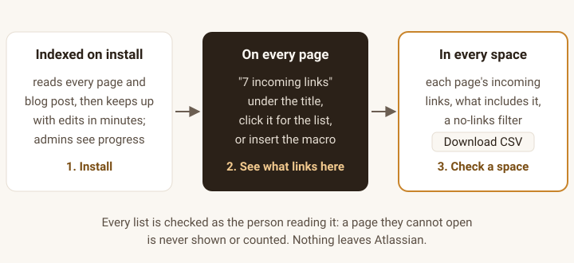
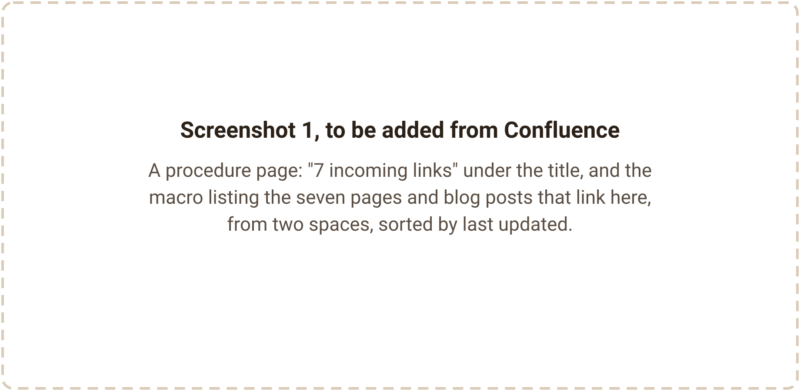
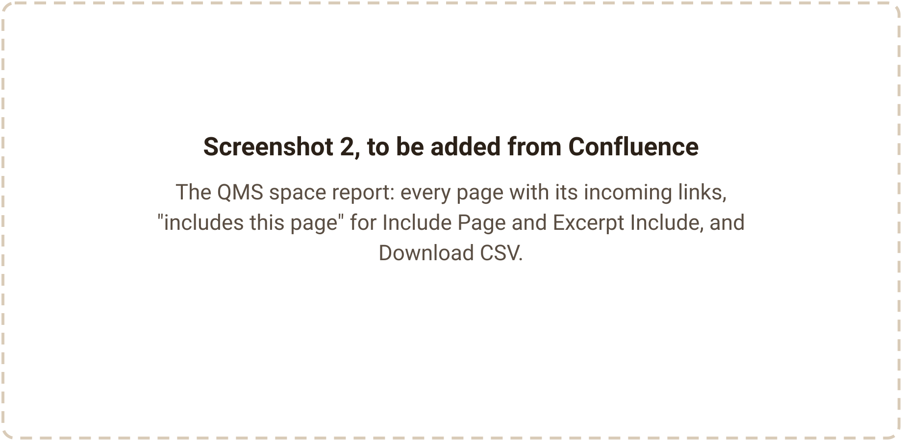
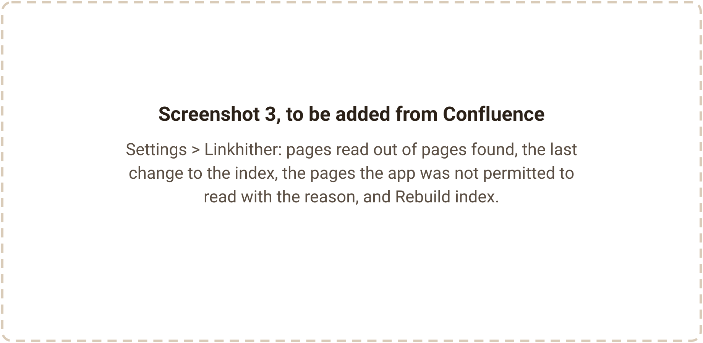
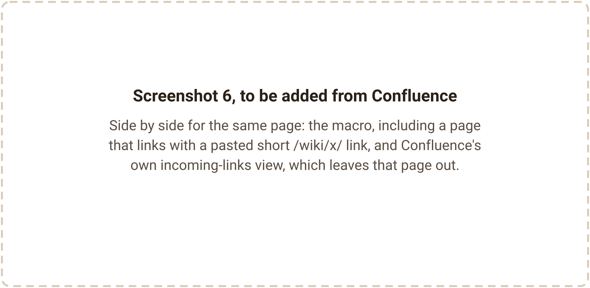

Linkhither for Confluence
Display incoming links per page, right on the page. Show traceability between pages without the tedious one-by-one trip to Page information.
Free for up to 10 users, with every feature. From 11 to 100 users, $0.40 per user per month; larger sites pay no more per user than that (price). Billed by Atlassian.
Get it on the Atlassian Marketplace
Listing in review. Linkhither is not on the Atlassian Marketplace yet and has not been submitted to Atlassian, so it can't be installed today. This button will link to the listing once Atlassian has approved it. For a note when it is live, email support@ochrestack.com.
For Confluence Cloud (Atlassian Forge). Not for Confluence Data Center or Server. English only. Questions first? support@ochrestack.com. Documentation and install steps

- Install. Linkhither reads every page and blog post by itself, then keeps up with edits within a few minutes. Admins see the progress.
- On every page: "7 incoming links" under the title; click it for the list, or insert the Incoming links macro.
- In every space: an Incoming links report with each page's links, what includes it, a filter for pages with no incoming links, and Download CSV.
Good to know: for a single page, Confluence's own Page information view already lists incoming links (CONFCLOUD-35218: "It can be found under page information but that is buried and a one-by-one traceability march"). If one admin checks one page now and then, that is enough.
Linkhither is for teams who need it everywhere. You pay for four things: the list shown on the page itself for every reader, a count in the byline of every page, a whole-space report with the pages no other page links to or includes and a CSV, and all of it filtered to what each reader may open.
What it does
- The Incoming links macro. Type
/Incoming linksin the editor. On the published page it lists every page and blog post that links to the page it sits on: title (linked), space and last-updated date. Readers sort by title or by last updated. Limit it to this space, to spaces you choose, or to content with a label, and choose what readers see when nothing links here: a message you write, or nothing at all. - A count under every title. Every page and blog post gets a byline item that reads "7 incoming links" ("1 incoming link" for one). Click it and the same list opens in a popup.
- An Incoming links report in every space, under Apps in the space sidebar. Every page in the space you can view, with its incoming-link count, the pages and blog posts that link to it, and its last update. Pages pulled into other pages with Include Page or Excerpt Include are marked "includes this page". Filter to the pages with no incoming links, sort by page, count or last update, and Download CSV saves exactly the rows and columns shown, with your filter and sort applied. The report loads in steps and shows how far it has got.
- An admin page in Confluence settings: pages and blog posts read out of those found, with a progress bar, when the index last changed, and how many pages the app was not permitted to read, with the reason. Rebuild index works only for Confluence admins; the app refuses anyone else on the server, not just in the screen.
- Nothing to set up. Indexing starts by itself on install. After that, a page or blog post that is published, edited, moved, trashed, restored or deleted is reflected within a few minutes, and an hourly check picks up any change whose event never arrived.
- Each list is checked as the reader. Every list and count is checked against Confluence as the person viewing it, every time. A page or blog post they cannot open is never shown to them and never counted for them.
In Confluence
The screenshots below will be taken in a real Confluence Cloud site, on a quality-management documentation space, before the listing goes to Atlassian. Until then each frame says what it will show.




Which links count
A page or blog post counts as linking to a page when its body contains any of these:
- a page link made with the link picker, with or without a space key;
- a pasted page URL, full or short (
/wiki/x/…), or an oldviewpage.actionlink; - a smart link to the page in inline, card or embed view;
- any of these inside a panel, an expand or another macro's body.
Not counted: links held in other macros' settings (Include Page, Excerpt Include, Children Display); links in comments, Jira or outside websites; links from live docs, whiteboards, databases and folders; a page's links to itself. Include Page and Excerpt Include are not counted as links, but the space report shows them as "includes this page".
Compared with Confluence's Page information
The two lists can differ, on purpose. On our test site, on 6 November 2026:
- Linkhither listed pages that linked with a short
/wiki/x/URL or an oldviewpage.actionlink. Page information did not list them. - Page information listed pages that only pull the page in with Include Page or Excerpt Include. Linkhither does not count those as links; its space report shows them as "includes this page".
So before you archive a page, check its Page information too: Linkhither does not see links held in other macros' settings, such as Children Display.
What the test runs showed
Linkhither is tested on a real Confluence Cloud site, through the app's own backend functions, with every result read back from Confluence. From the runs on 6 November 2026:
| Check | Result |
|---|---|
| A target page with one linking page or blog post per kind of link | The exact set of 12 linking pages and blog posts, from page events alone, in 11.7 s |
| One linking page edited to remove its link, another trashed | Both reflected in the list after 22 s |
| A page pulled into other pages only with Include Page | Shown as "includes this page", counted as 0 links, and not offered as a page with no incoming links |
| A 302-page space report | Every page listed, loaded in 1.5 s |
| Rebuild index | 1,129 pages and blog posts at 218 ms each |
| A page restricted to named people | Not read by the app; the admin page counted it |
On a page with three linking pages, the byline under the title read, in a browser:
3 incoming links
These lines come from the test log, laid out here by us; they are not screenshots of Confluence.
Price
| Users on your Confluence site | Per user per month | Example |
|---|---|---|
| 1 to 10 | $0 (free) | 10 users: $0 |
| 11 to 100 | $0.40 | 25 users: $10 a month, or $100 a year |
| Over 100 | no more than $0.40 | the Marketplace listing will give each tier |
One edition: every feature is in every tier, and there is no paid upgrade inside the app. Atlassian bills the subscription, monthly or annually (annual is 10 times the monthly price), and offers its standard 30-day free trial. Atlassian bills the renewal and sends the renewal notice; we add no upsell, no feature lock and no price change at renewal.
Permissions it asks for
| Permission (scope) | Used for |
|---|---|
read:page:confluence | Reading page bodies to find links, and checking which pages the reader may open |
read:blogpost:confluence | The same for blog posts |
read:space:confluence | Listing spaces to index them, showing space names, and finding spaces closed to the app |
read:confluence-content.summary | Being told when a page or blog post is published, edited, moved, trashed, restored or deleted |
write:confluence-content | Confluence sends trashed and deleted events to apps only if they hold this permission. Linkhither never writes to your site; it only reads. |
read:confluence-user | Checking that the person pressing Rebuild index is a Confluence admin |
storage:app | The index, in app storage inside Atlassian |
Documentation
The step-by-step guide is the Linkhither quick start.
Install
- In Confluence Cloud, open Apps > Explore more apps, search for Linkhither for Confluence (once the listing is live) and choose Get app. A site or Confluence admin installs it for the whole site.
- Review the permissions above and confirm. Indexing starts by itself.
- Open Settings > Linkhither to follow the first index. Until it finishes, lists may be incomplete.
Questions
How quickly do new links show up?
Within a few minutes, not instantly: Atlassian delivers page events to apps up to 3 minutes after an edit. On our test site, an edit and a trash were reflected in 22 seconds. After a bulk change of hundreds of pages, the last ones can take longer; in a 30-link bulk test, 29 arrived within 6 minutes and the hourly check completed the set.
Why do two people see different counts on the same page?
Each list is checked against Confluence as the person viewing it, so a page someone cannot open is not shown to them or counted for them. So far this has been run on our real test site only as an administrator; the automated tests cover readers who can see only some spaces and pages.
Does it see restricted pages?
Pages the app is not permitted to read are not indexed: a space closed to apps by an app access rule, or page restrictions that leave the app out. Links on those pages are not counted, even for a reader who may open them. The admin page shows how many pages that affects and why; it can count only the restricted pages that the admin viewing it can open.
Will a page that is only included elsewhere show up as having no incoming links?
No. The report's "Only pages with no incoming links" filter leaves out pages that Include Page or Excerpt Include pull in, because archiving them would change other pages.
How long does the first index take?
It starts by itself on install, and the admin page shows its progress. We measured 108 to 517 ms per page or blog post on our test site, so 10,000 pages take very roughly 20 to 90 minutes. We have not yet indexed a site of thousands of pages.
Can guests use it?
No. Guests and anonymous visitors do not see the macro or the byline: Forge does not let the app read Confluence as a guest, so it could not check what a guest may open.
Is there a graph, outgoing links, or broken-link checking?
Not in version one. It does one thing: incoming links.
Known limits
- A few minutes, not instantly. Atlassian delivers page events to apps up to 3 minutes after an edit; an edit whose event never arrives is picked up by the hourly check.
- Pages restricted from the app are not indexed, even for readers who may open them. The admin page counts them.
- Links held in other macros' settings are not counted (Include Page, Excerpt Include, Children Display). Include Page and Excerpt Include are shown in the space report; check Page information before you archive a page.
- Links copied from the Share dialog (
/l/cp/…) count only if Confluence redirects them to the page for the app. That has been tested against a model of Confluence, not yet on a real site. Page information does not list these links either. - Guests and anonymous visitors see neither the macro nor the byline.
- The space report lists pages, not blog posts; blog posts still appear as linking content. A page moved together with its parent can show a low count until it is edited or the index is rebuilt; it is never offered as having no incoming links.
- Archived pages, drafts and comments are not counted as linking content. In Word and PDF exports, the macro prints a one-line note instead of the list.
- No outgoing links, graphs, broken-link checks or bulk link editing. Confluence Cloud only; no Data Center or Server. English only.
How we tested
An end-to-end test installs Linkhither on a real Confluence Cloud site, creates a test space with a target page, a target blog post and one linking page or blog post for every kind of link, and checks the results through the app's own backend functions. It then edits and trashes linking pages, builds a 300-page space, rebuilds the index as a Confluence admin, and compares the result with Confluence's Page information. An automated suite of 106 tests covers the link parser (on storage format captured from a real site), sorting, filters, both empty states, the report and CSV (commas, quotes, line breaks, non-ASCII titles), every page event, resuming an interrupted index, the admin-only rebuild, and readers who can see only some pages.
Not yet covered:
- Opening every screen in a browser. The byline, the macro and the space report have been rendered in a browser on our test site by an automated check. The popup, the macro settings, the CSV download and the admin page have not yet, and no person has yet gone through the screens. They will be before the listing goes to Atlassian.
- A second, non-admin account on the real site, for the permission filter.
- Share-dialog links on a real site (see Known limits).
- A site of thousands of pages. The largest real-site rebuild so far was 1,129 items, and a 3,000-page space report has been tested only against a model.
Privacy
Nothing leaves Atlassian. Linkhither runs on Atlassian Forge, talks only to your own Confluence site, and has no permission to reach any other server. No analytics, no tracking. Its app storage, hosted by Atlassian for your site only, holds the ids of pages, blog posts and spaces, which page links to (or includes) which, and one-way hashes of the titles that links name. It stores no page content, no titles and no account ids; titles are read live from Confluence when you open a list, as you. When Confluence gives the byline no session token, the app reads as that same person through Forge's user impersonation, never as anyone else. See also the privacy policy.
Support
Email support@ochrestack.com with your site URL and, for a problem with a specific page, the page URL. Bug reports and feature requests are welcome at the same address.
Get it on the Atlassian Marketplace
Listing in review · free for up to 10 users, $0.40 per user per month from 11 users · billed by Atlassian · Confluence Cloud